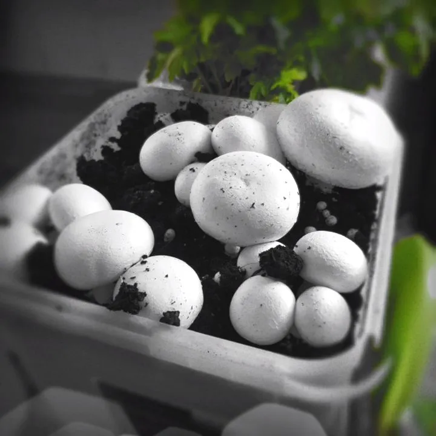
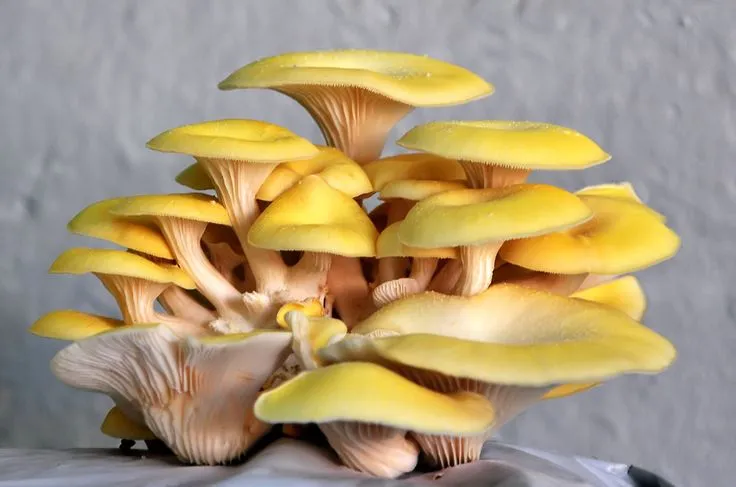
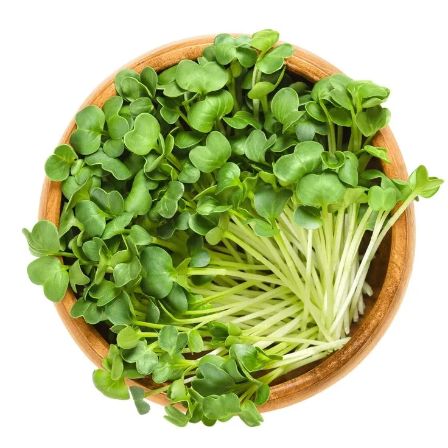
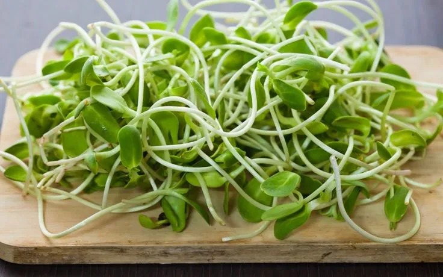
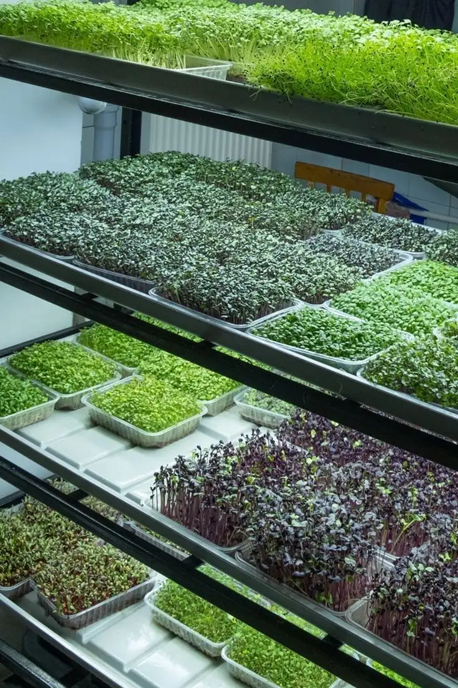
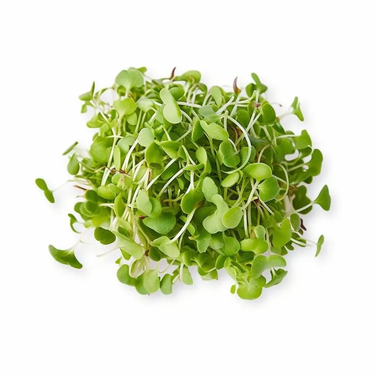
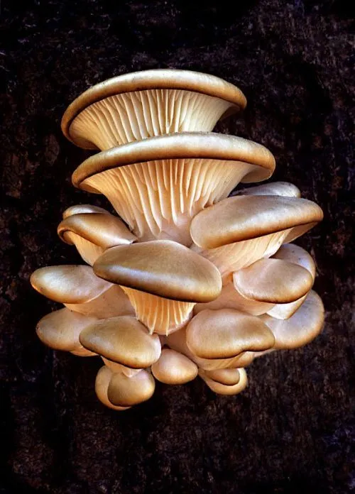
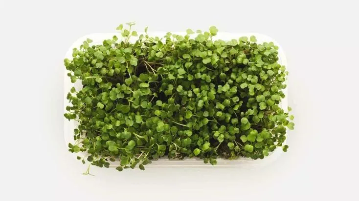

Existing project image
Existing project imageBlue Oyster
A named mushroom variety already represented in the current catalogue.
Rs 180/ sample pack
Current WeGroween range
Small-batch microgreens, mushrooms and seasonal produce, selected for freshness and delivered with clear harvest timing.

Existing project photographProduct photography and mushroom varieties already exist in the tracked WeGroween catalogue.
01 - Current harvest
Names and flavour cues come from the current catalogue. Prices, pack sizes and live stock shown here are illustrative and require client confirmation.
View the current rangeExisting project imageA named mushroom variety already represented in the current catalogue.

Existing project imageA distinctive oyster variety already represented in the current catalogue.

Existing project imageA peppery microgreen variety already represented in the current catalogue.

Existing project imageA fresh microgreen variety already represented in the current catalogue.
Delivery check
Enter your six-digit pincode for the next available delivery window.
02 - Shop by kitchen need
Categories are organised around ingredient character and use, while still naming the product honestly.
Peppery, mild and aromatic varieties for everyday plates.
Shop microgreens Savoury depthDistinct varieties with texture, handling and cooking notes.
Shop mushrooms Seasonal staplesOrganically grown produce selected for flavour and timing.
Shop produce Curious ingredientsLimited cultivars and unusual products with clear guidance.
Explore the uncommon
Existing project photograph03 - Cultivation journal
The existing photography can show a real growing context. Launch copy should add only verified variety, harvest, handling and best-use information.
Blue-grey oyster is more useful than a generic mushroom label.
Ready, growing, limited and resting are honest operating states.
Pack date, storage and best-use notes travel with the order.
04 - From harvest to home
Delivery information is part of the shopping experience, not a policy discovered after payment.
Confirm the next delivery window before choosing perishable produce.
See harvest status, pack size and timing on the product itself.
Storage and use notes help the product arrive with fewer unknowns.
Track the delivery and know whom to contact if something is wrong.
Service areas, order cut-offs and delivery days should remain explicit and editable as operations grow.
Read delivery guidanceThe household edit
The current source includes a Stir-Fry Specialist, Gourmet Salad Kit, Umami Power Pack and Chef's Signature Box. This module turns that existing range into a clearer household shopping proposition.
05 - For professional kitchens
Restaurants, cafes and chefs can request current availability, kitchen pack sizes and recurring supply without changing the household-first shopping journey.
06 - From the growing room
The journal should reduce waste, support better use and reveal the care behind each harvest.
Visit the journal
A storage guide to develop and verify before launch.
Review the proposed guide

Next harvest
Browse what is ready now, or receive one concise harvest note when the next batch opens.